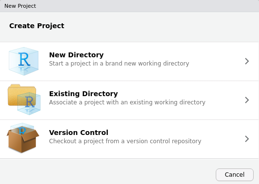
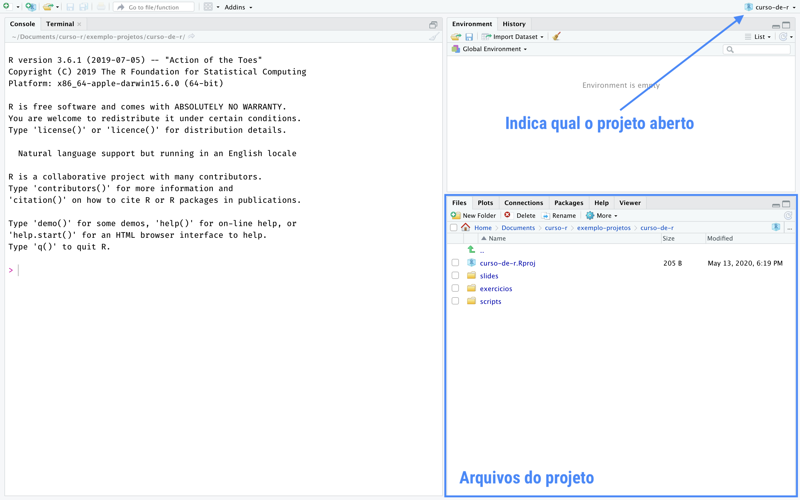

2.3 Projetos
Uma funcionalidade muito importante do RStudio é a possibilidade de criar projetos.
Um projeto nada mais é do que uma pasta no seu computador. Nessa pasta, estarão todos os arquivos que você usurá ou criará na sua análise.
A principal razão de utilizarmos projetos é organização. Com eles, fica muito mais fácil importar bases de dados para dentro do R, criar análises reprodutíveis e compartilhar o nosso trabalho.
Você que está começando agora no R, já se habitue a criar um novo projeto para cada nova análise que for fazer.
Para criar um projeto, clique em New Project... no Menu File. Na caixa de diálogo que aparecerá, clique em New Directory para criar o projeto em uma nova pasta ou Existing Directory para criar em uma pasta existente.
Se você tiver o Git instalado, você também pode usar projetos para conectar com repositórios do Github e outras plataformas de desenvolvimento. Para isso, basta clicar em Version Control.

Criando um projeto, o RStudio criará na pasta escolhida um arquivo nome-do-projeto.Rproj. Você pode usar esse arquivo para iniciar o RStudio já com o respectivo projeto aberto.
Quando um projeto estiver aberto no RStudio, o seu nome aparecerá no canto superior direito da tela. Na aba Files, aparecerão todos os arquivos contidos no projeto.

Você pode criar livremente novas pastas dentro da pasta do projeto. Por padrão, o R sempre começará a procurar arquivos na pasta raiz do projeto (é a pasta que contem o nome-do-projeto.Rproj).
Uma maneira fácil de navegar entre projetos é utilizar o menu disponibilizado quando clicamos no nome do projeto. Veja a figura a seguir.

Nesse menu, além de podermos criar novos projetos ou abrir projetos já existentes, também temos um acesso rápido a projetos abertos recentemente. Basta clicar em qualquer um deles para trocar de projeto, isto é, deixar de trabalhar em uma análise e começar a trabalhar em outra.
A seguir, apresentamos algumas estruturas de organização de projetos no RStudio.
Estrutura 1. Por extensão de arquivo.
nome_do_projeto/
- .Rprofile # códigos para rodar assim que abrir o projeto
- R/ # Código R, organizado com a-carrega.R, b-prepara bd.R, c-vis.R, d-modela, ...
- RData/ # Dados em formato .RData
- csv/ # Dados em .csv
- png/ # gráficos em PNG
- nome_do_projeto.RprojEstrutura 2. Típico projeto de análise estatística.
project/
- README.Rmd # Descrição do pacote
- set-up.R # Pacotes etc
- R/ # Código R, organizado com 0-load.R, 1-tidy.R, 2-vis.R, ...
- data/ # Dados (estruturados ou não)
- figures/ # gráficos (pode ficar dentro de output/)
- output/ # Relatórios em .Rmd, .tex etc
- project.RprojEstrutura 3. Pacote do R.
project/
- README.md # Descrição do pacote
- DESCRIPTION # Metadados estruturados do pacote e dependências
- NAMESPACE # importações e exportações do pacote
- vignettes/ # Relatórios em .Rmd
- R/ # Funções do R
- data/ # Dados estruturados (tidy data)
- data-raw/ # Dados não estruturados e arqs 0-load.R, 1-tidy.R, 2-vis.R, ...
- project.Rproj